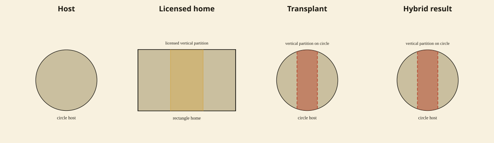
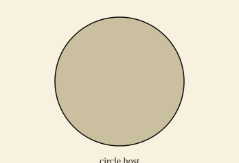
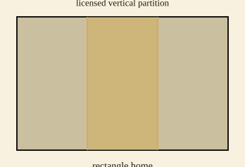
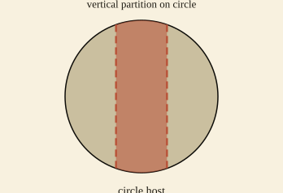
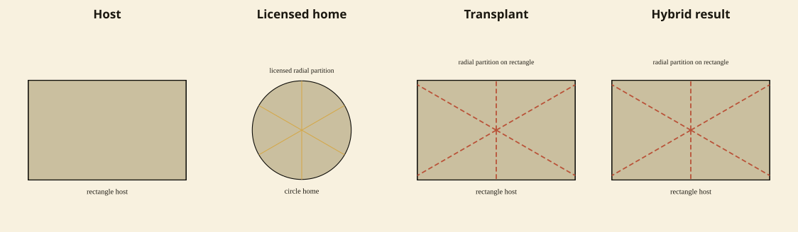
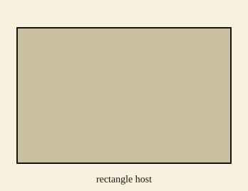
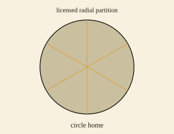
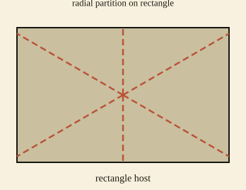

Real transplant exemplars (ReaLLMs-flagged)
Three real student-work figures the ReaLLMs descriptor pass flagged as hybridized transplants. Each filmstrip models the transplant grammar (host, licensed home, transplant, hybrid result) and is labeled with the literature source. The figures themselves remain the evidence; the SVG is the model, not a redraw of the student page.
Cadez & Kolar (2018), p.14
Literature exemplar (real student-work figure). ReaLLMs-read transplant: rectangular_grid_partition on circle. Grammar model reuses scene vertical_partition_on_circle.




Zhang, Clements & Ellerton (2015), p.18
Literature exemplar (real student-work figure). ReaLLMs-read transplant: radial_partition on rectangle. Grammar model reuses scene circle_partition_on_rectangle.




van Garderen, Scheuermann & Jackson (2014), p.9
Literature exemplar (real student-work figure). ReaLLMs-read transplant: circle radial partition on submarine sandwich. Grammar model reuses scene circle_partition_on_rectangle.